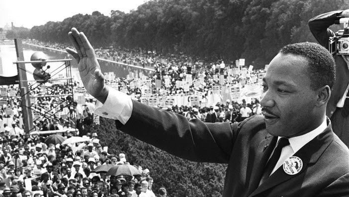

The American religious leader who led the Civil rights movement in the United States of America

Martin Luther King Jr. waving at a crowd of supporters at the March on Washington
I have a dream that my four children will one day live in a nation where they will not be judged by the color of their skin but by the content of their character.
- Martin Luther King Jr.
Key events and timelines of the Life of Martin Luther King Jr
1929- King was born on January 15, 1929, in Atlanta, Georgia to Reverend Micheal King Sr. and Alberta King
1942- King became the youngest assistant Manager of a newspaper delivery station for the Atlanta Journal
1948- King graduated at the age of 19 from Morehouse with a Bachelor's of Arts in Sociology
1953 - Martin Luther married Correta Scott on June 18, 1953, on the lawn of her parents' house in her hometown of Heiberger, Alabama
1954 - King was called as Pastor of the Dexter Avanue Baptist Church in Montgomery, Alabama.
March 2, 1955- He led the Montgomery bus boycott and later became the first president of the Southern Christain Leadership Conference.
June 5, 1955- He received his Ph.D. degree on June 5, 1955, with a dissertation titled A comparison of the conceptions of God in the thinking of Paul Tillich and Henry Nelson Wieman.
1959- Martin Luther visited the birthplace of Mahatma Gandhi in India with the help of the American Friends Service Committee in 1959. The trip influenced his commitment to American civil rights struggle.
1963- King helped organize the march on Washington, where he delivered his famous I have a Dream speech on the steps of the Lincoln Memorial.
1964- He won the Nobel Peace Prize for combating racial inequality through non-violent resistance.
1965 - King was awarded the American Liberties Medallion by the American Jewish Committee for his exceptional advancement of the principles of human Liberty
1966- After several successes in the south, King, Bevel, and others in the civil rights organizations took the movement to the North , with Chicago as their first destination.
April 4, 1967- King delivered a speech titled Beyound Vietnam: A time to break silence, at the New York City Riverside Church, where he spoke strongly against the United States' role in the war in Vietnam.
April 15, 1967- Martin Luther participated and spoke at an anti-war march from Manhattan's Central Park to the United Nations.
January 13, 1968 - He called for a large march on Washington against one of history's most cruel and senseless wars.
1968- King and Southern Christain Leadership ConferencE organized the Poor People's Campaign to address issues of economic justice.
February 4, 1968 At the Ebenezer Baptist Church, in speaking about how he wished to be remembered after his death, King stated:
I'd like somebody to mention that day that Martin Luther King Jr. tried to give his life serving others. I'd like for somebody to say that day that Martin Luther King Jr. tried to love somebody.
I want you to say that day that I tried to be right on the war question. I want you to be able to say that day that I did try to feed the hungry. I want you to be able to say that day that I did try in my life to clothe those who were naked. I want you to say on that day that I did try in my life to visit those who were in prison. And I want you to say that I tried to love and serve humanity.
Yes, if you want to say that I was a drum major. Say that I was a drum major for justice. Say that I was a drum major for peace. I was a drum major for righteousness. And all of the other shallow things will not matter. I won't have any money to leave behind. I won't have the fine and luxurious things of life to leave behind. But I just want to leave a committed life behind.
April 4, 1968 - Martin Luther King was assasinated by James Earl Ray as he stood on the balcony at the Lorraine Motel in Memphis Abernathy.
1977- The Presidential Medal of Freedom was posthumously awarded to King by President Jimmy Carter.
November 2, 1983 - President Ronald Reagan signed a bill creating a Federal Holiday to honor King.